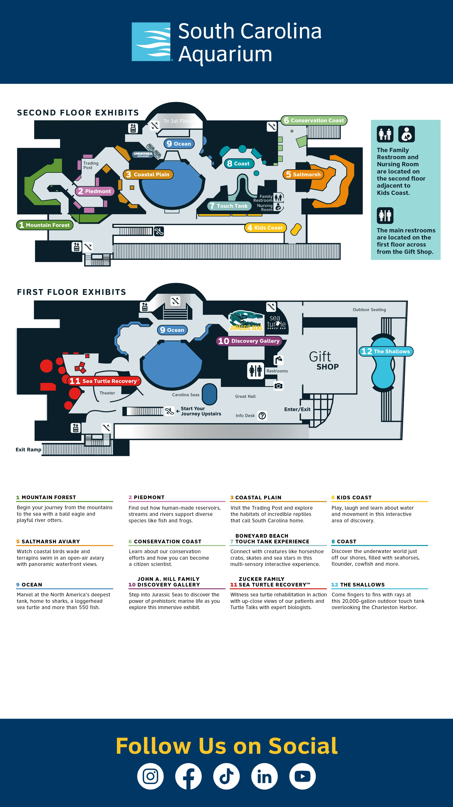

90–120 minutes
Use the full route for a relaxed visit, or focus on the marked “Must see” stops if you are short on time.
Charleston Visit Helper
A polished, phone-friendly guide for your South Carolina Aquarium visit: key exhibits, progress tracking, the official Aquarium map, parking links, and nearby food ideas.
Use the full route for a relaxed visit, or focus on the marked “Must see” stops if you are short on time.
The Aquarium route is built around South Carolina habitats, moving from inland ecosystems toward coastal and ocean life.
Tap each stop as you finish it. The progress bar keeps your visit organized without making the tour feel rushed.
This uses the Aquarium’s current online map image. Pinch to zoom on your phone, or open the official page for the latest version.

Tap a card to open directions. Call or check hours before heading over.
Prioritize Mountain Forest, touch tanks, Great Ocean Tank, Jurassic Seas, and Sea Turtle Care Center.
Harbor views, otters if active, jellyfish, large tank silhouettes, and turtles.
The Aquarium points guests to the city-operated garage at 24 Calhoun Street.
Keep the official map open and ask staff for the easiest route if elevators or ramps are needed.